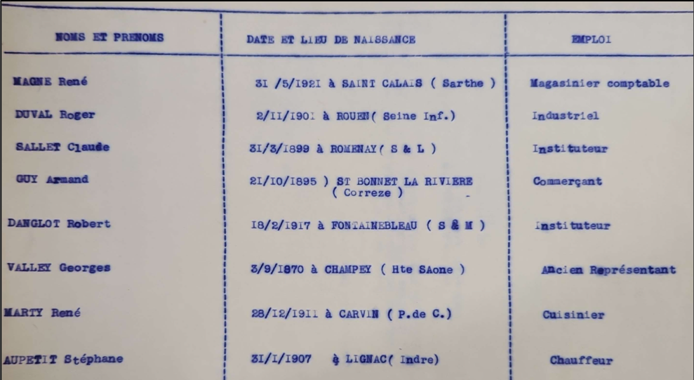

L’établissement de cours de justice
Conformément à la demande du 8 janvier 1945 du président du Comité Parisien Libération, le maire de Drancy adresse une liste de personnes [1] parmi lesquelles certaines des jurés devant siéger dans les nouvelles cours de justice pourraient être choisis dans un courrier du 19 janvier 1945.
À la demande de la cour d’Appel de Paris, dans un courrier daté du 15 février 1945, des renseignements précis comme le nom, le prénom, le domicile, la profession, la date et le lieu de naissance doivent être fournis [2].
Dans un courrier daté du 23 février 1945, la mairie de Drancy fournit les informations demandées. La liste des potentiels jurés reflète une diversité de métiers : industriel, instituteur, commerçant, cuisinier ou encore chauffeur [3].
Shanel, Rayan, Kasish
Archives
- [1] Lettre du président du CLL de Drancy au Président du CPL portant sur la désignation de huit citoyens pouvant être désignés en qualité de jurés, 19 janvier 1945, archives municipales
- [2] Lettre du président du CPL adressée au président du CLL de Drancy relative à aux citoyens désignés pour siéger dans les nouvelles cours de justice, 15 février 1945, archives municipales
- [3] Lettre du président du CLL de Drancy au Président du CPL portant sur la désignation de huit citoyens pouvant être désignés en qualité de jurés, 23 février 1945, archives municipales